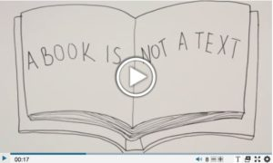

8.2 Texto


8.2.1 As características pedagógicas únicas do texto
Desde a invenção da imprensa de Gutenberg, o texto impresso tem constituído uma tecnologia de ensino dominante, indiscutivelmente tão influente como a palavra falada do professor. Ainda hoje, os livros didáticos, maioritariamente em formato impresso, mas cada vez mais em formato digital, continuam a desempenhar um papel fundamental na educação formal, na formação e na educação a distância. Muitas disciplinas totalmente on-line ainda recorrem extensivamente a sistemas de gestão de aprendizagem baseados em texto e a fóruns de discussão assíncronos on-line.
Por que razão isto acontece? O que torna o texto uma mídia de ensino tão poderosa e continuará a ser assim, tendo em conta os desenvolvimentos mais recentes da tecnologia da informação?
8.2.1.1 Características de apresentação
O texto pode apresentar-se em múltiplos formatos, incluindo livros didáticos impressos, mensagens de texto, romances, revistas, jornais, notas manuscritas, artigos de periódicos científicos, ensaios, debates assíncronos on-line, entre outros.
Os sistemas de símbolos essenciais no texto são a linguagem escrita (incluindo os símbolos matemáticos) e os recursos gráficos estáticos, que abrangem diagramas, tabelas e cópias de imagens, tais como fotografias ou pinturas. A cor constitui um atributo importante para algumas áreas disciplinares, como a química, a geografia, a geologia e a história da arte.
Algumas das características de apresentação únicas do texto são as seguintes:
- o texto revela-se particularmente eficaz no tratamento da abstração e da generalização, essencialmente através da linguagem escrita;
- o texto permite o sequenciamento linear da informação num formato estruturado;
- o texto consegue apresentar e separar a evidência empírica ou os dados das abstrações, conclusões ou generalizações derivadas dessa mesma evidência empírica;
- a estrutura linear do texto viabiliza o desenvolvimento de uma argumentação ou de um debate coerente e sequencial;
- ao mesmo tempo, o texto consegue associar a evidência ao argumento e vice-versa;
- a natureza registrada e permanente do texto viabiliza a análise independente e a crítica do seu conteúdo;
- os recursos gráficos estáticos, tais como gráficos ou diagramas, permitem apresentar o conhecimento de forma distinta da linguagem escrita, fornecendo exemplos concretos de abstrações ou oferecendo uma via diferente para representar o mesmo conhecimento.
Verifica-se alguma sobreposição de cada uma destas características com outras mídias, mas nenhum outro meio combina todas estas características ou se revela tão poderoso quanto o texto no que respeita a estes aspectos.
Anteriormente (Capítulo 2, Seção 2.7.3), argumentei que o conhecimento acadêmico constitui uma forma específica de conhecimento que apresenta características que o diferenciam de outros tipos de conhecimento e, em particular, do conhecimento ou das crenças baseadas unicamente na experiência pessoal direta. O conhecimento acadêmico constitui uma forma de conhecimento de segunda ordem que procura abstrações e generalizações fundamentadas na argumentação e na evidência.
Os componentes ou critérios fundamentais para o conhecimento acadêmico são:
- a codificação: o conhecimento pode ser representado consistentemente de alguma forma (palavras, símbolos, vídeo);
- a transparência: a fonte do conhecimento pode ser rastreada e verificada;
- a reprodução: o conhecimento pode ser reproduzido ou contar com múltiplas cópias;
- a comunicabilidade: o conhecimento deve apresentar-se numa forma que permita a sua comunicação e o seu questionamento por parte de terceiros.
O texto preenche os quatro critérios descritos, constituindo-se assim como uma mídia indispensável para a aprendizagem acadêmica.
8.2.1.2 Desenvolvimento de competências
Devido à capacidade do texto para tratar abstrações e argumentações baseadas em evidências, e à sua adequação para a análise independente e crítica, o texto revela-se particularmente útil para desenvolver os resultados de aprendizagem de nível superior exigidos a nível acadêmico, tais como a análise, o pensamento crítico e a avaliação.
Revela-se menos útil, por exemplo, para demonstrar processos ou desenvolver competências manuais.
8.2.2 O livro e o conhecimento



Embora o texto possa assumir múltiplos formatos, pretendo focar-me particularmente no papel do livro, devido à sua centralidade na aprendizagem acadêmica. O livro demonstrou ser uma mídia extraordinariamente poderosa para o desenvolvimento e transmissão do conhecimento acadêmico, dado que preenche todos os quatro componentes exigidos para a apresentação deste conhecimento. Mas em que medida as novas mídias, tais como os blogs, as wikis, a multimídia e as mídias sociais, conseguem substituir o livro no conhecimento acadêmico?
As novas mídias conseguem, na verdade, responder igualmente bem a alguns destes critérios e proporcionar, inclusive, valor acrescentado, como a rapidez de reprodução e a ubiquidade; no entanto, o livro continua a deter algumas características únicas. Uma vantagem fundamental de um livro reside em permitir o desenvolvimento de uma argumentação sustentada, coerente e abrangente, apoiada em evidências. Os blogs apenas conseguem realizar isto de forma limitada (caso contrário, deixam de ser blogs e transformam-se em artigos ou num livro digital).
A quantidade revela-se por vezes importante, e os livros permitem reunir um grande volume de evidências e argumentos de apoio, viabilizando uma exploração mais ampla de um tema ou problemática, num formato relativamente condensado e portátil. Uma argumentação consistente e devidamente fundamentada, com evidências, explicações alternativas ou mesmo contraposições, exige o espaço adicional de um livro. Acima de tudo, os livros conseguem proporcionar coerência ou uma posição ou abordagem específica e sustentada perante um problema ou questão, um contrapeso necessário ao caos e à confusão das múltiplas novas formas de mídias digitais que competem constantemente pela nossa atenção, mas em fragmentos muito menores que se revelam globalmente mais difíceis de integrar e assimilar.
Outra característica acadêmica importante do texto reside em poder ser cuidadosamente escrutinado, analisado e constantemente verificado, em parte devido ao fato de ser amplamente linear e também permanente após a publicação, o que viabiliza um questionamento ou teste mais rigoroso em termos de evidências, racionalidade e consistência. A multimídia em formato registrado consegue aproximar-se destes critérios, mas o texto proporciona também maior conveniência e, em termos de mídias, maior simplicidade. Por exemplo, considero sistematicamente a análise de vídeo, que incorpora múltiplas variáveis e sistemas de símbolos, mais complexa do que a análise de um texto linear, mesmo que ambos contenham argumentos igualmente rigorosos (ou igualmente frágeis).
8.2.2.1 A forma e a função de um livro
A forma ou a representação tecnológica de um livro ainda assume relevância? Um livro continua a ser um livro se for descarregado e lido num iPad ou Kindle, em vez de em texto impresso?
Para fins de aquisição de conhecimentos, a situação provavelmente não difere. Com efeito, para fins de estudo, a versão digital revela-se provavelmente mais conveniente, dado que transportar um iPad com potencialmente centenas de livros descarregados é preferível a transportar as versões impressas dessas mesmas obras. Registram-se ainda queixas por parte de estudantes sobre as dificuldades de efetuar anotações em livros digitais, mas esta constituirá, quase com toda a certeza, uma funcionalidade padrão disponível no futuro.
Se o livro for descarregado na totalidade, a sua função não se altera significativamente pelo fato de estar disponível em formato digital. No entanto, verificam-se algumas alterações sutis. Há quem argumente que a leitura rápida (scanning) continua a ser mais fácil numa versão impressa. Já sentiu dificuldade em encontrar uma citação específica num livro digital em comparação com a versão impressa? Naturalmente, pode utilizar a funcionalidade de pesquisa, mas isso exige conhecer exatamente as palavras corretas ou o nome da pessoa citada. Com um livro impresso, consigo frequentemente encontrar uma citação apenas folheando as páginas, pois utilizo o contexto e a leitura visual rápida para localizar a fonte, mesmo quando não sei exatamente o que procuro. Por outro lado, a pesquisa quando se sabe o que se procura (por exemplo, uma referência de um autor específico) é muito mais fácil digitalmente.
Quando os livros se encontram disponíveis digitalmente, os utilizadores podem descarregar apenas os capítulos específicos do seu interesse. Isto revela-se valioso se souber exatamente o que pretende, mas encerra também perigos. Por exemplo, no meu livro sobre a gestão estratégica da tecnologia (Bates e Sangrà, 2011), o último capítulo resume o restante conteúdo da obra. Se o livro estivesse em formato digital, a tentação seria descarregar apenas o capítulo final. Assim, dispor-se-ia de todas as mensagens importantes do livro, correto? Na verdade, não. O que se perderia seriam as evidências que sustentam as conclusões. Ora, o livro sobre gestão estratégica baseia-se em estudos de caso, pelo que seria muito importante verificar a forma como estes foram interpretados para se chegar às conclusões, uma vez que isso afetará a confiança do leitor nas conclusões apresentadas. Se descarregar apenas a versão digital do último capítulo, perde também o contexto global da obra. Dispor da totalidade do livro confere aos leitores maior liberdade para interpretar e acrescentar as suas próprias conclusões do que dispor apenas de um capítulo de resumo.
Em conclusão, verificam-se vantagens e desvantagens na digitalização de um livro, mas a essência deste não sofre alterações profundas quando passa a digital em vez de impresso. Escrevi também sobre as vantagens de publicar um livro didático acadêmico on-line aberto, com base na minha própria experiência ao escrever a primeira edição desta obra, que se encontra agora disponível em 10 línguas e conta com mais de 500.000 descarregamentos desde 2015. Para outra perspectiva sobre este assunto, ver o blog de Clive Shepherd: Weighing up the benefits of traditional book publishing.
8.2.2.2 Um novo nicho para os livros na academia
Vimos historicamente que as novas mídias frequentemente não substituem por completo um meio mais antigo, mas este acaba por encontrar um novo "nicho". Assim, a televisão não conduziu ao desaparecimento total do rádio. Do mesmo modo, suspeito que continuará a existir um papel para o livro no conhecimento acadêmico, permitindo que a obra (seja digital ou impressa) prospere a par das novas mídias e formatos no meio acadêmico.
No entanto, os livros que mantêm o seu valor acadêmico necessitarão provavelmente de se apresentar muito mais específicos no seu formato e objetivo do que tem sido a realidade até à data. Por exemplo, não vejo futuro para livros constituídos essencialmente por uma coleção de capítulos fracamente associados mas semi-independentes de diferentes autores, a menos que se verifique uma forte coesão e uma coordenação editorial que proporcione uma argumentação integrada ou um conjunto consistente de dados ao longo de todos os capítulos. Acima de tudo, os livros poderão necessitar de alterar algumas das suas características para permitir maior interação e contributos dos leitores, bem como mais ligações com o mundo exterior. Revela-se contudo muito improvável que os livros sobrevivam em formato impresso, dado que a publicação digital permite adicionar muito mais funcionalidades, reduz a pegada ecológica e torna o texto muito mais portátil e transferível.
Por fim, não se trata de um argumento para ignorar as vantagens acadêmicas das novas mídias. O valor das imagens, do vídeo e da animação para representar o conhecimento, a capacidade de interagir assincronamente com outros aprendizes e o valor das redes sociais encontram-se ainda subexplorados no meio acadêmico. Mas o texto e os livros continuam a ser importantes.
8.2.3 O texto e outras formas de conhecimento
Foquei-me particularmente no texto e no conhecimento acadêmico devido à relevância tradicional do texto e do conhecimento impresso na academia. As características pedagógicas únicas do texto podem, contudo, revelar-se menos marcantes para outras formas de conhecimento. Com efeito, a multimídia pode apresentar muito mais vantagens no ensino técnico e profissional.
Na educação básica e secundária, o texto e o material impresso deverão continuar a ser importantes, dado que ler e escrever continuarão a ser competências essenciais na era digital, pelo que o estudo do texto (digital e impresso) manterá a sua relevância, quanto mais não seja para o desenvolvimento de competências de alfabetização.
De fato, uma das limitações do texto reside em exigir um elevado nível de competências de alfabetização prévias para poder ser utilizado com eficácia no ensino e na aprendizagem; aliás, grande parte do ensino e da aprendizagem foca-se no desenvolvimento de competências que permitam a análise rigorosa de materiais textuais. Com efeito, a capacidade de leitura constitui uma das competências essenciais identificadas para o século XXI. A alfabetização na leitura e na escrita encontra-se sob alguma pressão devido à utilização de linguagem truncada em mensagens de texto, à correção ortográfica automática e a símbolos emotivos nas mídias sociais. No entanto, deveríamos dedicar igual atenção ao desenvolvimento de competências de alfabetização na utilização e interpretação de multimídia na era digital.
8.2.4 Avaliação
Se o texto se revela crítico para a apresentação do conhecimento e desenvolvimento de competências na sua área disciplinar, quais são as implicações para a avaliação? Se se espera que os estudantes desenvolvam as competências que o texto parece promover, pressupõe-se que este constituirá uma mídia importante para a avaliação. Os estudantes necessitarão de demonstrar a sua própria capacidade de utilizar o texto para apresentar abstrações, argumentações e raciocínios baseados em evidências.
Nesses contextos, revelam-se provavelmente necessárias respostas textuais estruturadas, tais como ensaios ou relatórios escritos, em vez de perguntas de escolha múltipla ou relatórios multimídia.
8.2.5 Mais evidências, por favor
Embora se tenha verificado uma vasta pesquisa sobre as características pedagógicas de outras mídias, como o áudio, o vídeo e a computação, o texto tem sido genericamente tratado como a modalidade padrão, a base com a qual se comparam os restantes meios. Como resultado, o material impresso, em particular, é em grande parte dado como adquirido na academia. Encontramo-nos, contudo, na fase em que necessitamos de dedicar muito mais atenção às características únicas do texto nos seus vários formatos, em relação a outras mídias. Até que disponhamos de mais estudos empíricos sobre as características únicas do texto e do impresso, o texto continuará a assumir um papel central, pelo menos no ensino e na aprendizagem acadêmica.
Referências
Koumi, J. (1994) Media comparisons and deployment: a practitioner’s view British Journal of Educational Technology, Vol. 25, No. 1.
Koumi, J. (2006) Designing video and multimedia for open and flexible learning. London: Routledge.
Koumi, J. (2015) Learning outcomes afforded by self-assessed, segmented video-print combinations Cogent Education, Vol. 2, No.1
Manguel, A. (1996) A History of Reading London: Harper Collins
Embora existam muitas publicações sobre o texto, no que respeita à tipografia, estrutura e sua influência histórica na educação e cultura, não consegui encontrar publicações em que o texto seja comparado com outras mídias modernas, como o áudio ou o vídeo, em termos das suas características pedagógicas, embora Koumi (2015) tenha escrito sobre o texto em combinação com o áudio, e o livro de Albert Manguel constitua também uma leitura fascinante sob uma perspectiva histórica.
No entanto, estou seguro de que a minha falta de referências decorre da minha lacuna de erudição nesta área específica. Se dispuser de sugestões de leitura, agradeço que me envie um e-mail. Além disso, o estudo das características pedagógicas únicas do texto na era digital poderia constituir um tema de tese de doutoramento muito interessante e valioso.
Atividade 8.2 Identificando as características pedagógicas únicas do texto
- Escolha uma das disciplinas que ministra. Quais os aspectos essenciais de apresentação do texto que assumem relevância para esta disciplina? O texto constitui o melhor meio para representar o conhecimento na sua área disciplinar? Se não, quais conceitos ou temas seriam mais bem representados através de outras mídias?
- Analise as competências listadas na Seção 1.2 deste livro. Quais destas competências seriam mais bem desenvolvidas através da utilização do texto em vez de outras mídias? Como faria isso recorrendo a um ensino baseado no texto?
- Qual a sua opinião sobre os livros para a aprendizagem? Considera que o livro está morto ou prestes a tornar-se obsoleto? Se considera que os livros continuam a ser valiosos para a aprendizagem, quais alterações, a existirem, pensa que deveriam ser introduzidas nos livros acadêmicos? O que se perderia se os livros fossem inteiramente substituídos por novas mídias? O que se ganharia?
- Em que condições seria mais adequado avaliar os estudantes através de ensaios escritos e em que condições os portfólios multimídia seriam mais adequados para a avaliação?
- Consegue pensar em quaisquer outras características pedagógicas únicas do texto?
Para feedback sobre esta atividade, clique no podcast abaixo:
Um elemento de áudio foi excluído desta versão do texto. Você pode ouvi-lo on-line aqui: https://pressbooks.bccampus.ca/teachinginadigitalagev2/?p=201